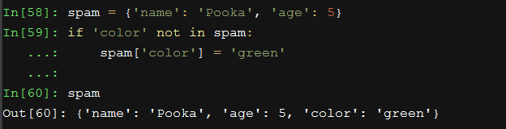
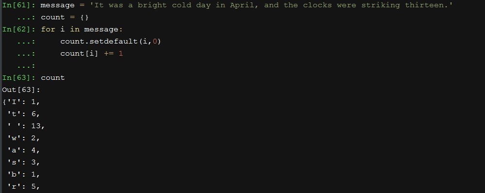

40-python基础-python3-字典常用方法-setdefault()原文出处:本文由博客园博主Summer儿提供。
原文连接:https://www.cnblogs.com/summer1019/p/11368965.html
setdefault()
-
常常需要为字典中某个键设置一个默认值，当该键没有任何值时使用它,如下面的情况:

-
传递给该方法的第一个参数，是要检查的键。第二个参数，是如果该键不存在时要设置的值。
-
如果该键确实存在，方法就会返回键的值。
-
setdefault()方法是一个很好的快捷方式，可以确保一个键存在。防止报错！
实例：统计一个字符串中各个字符的个数：
